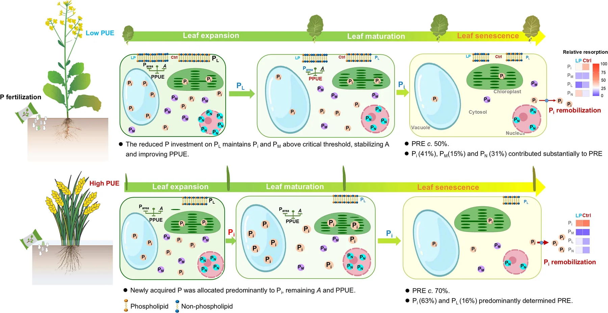

About Me
I am a final-year Master's candidate in Ecology (expected graduation in June 2027) at the College of Ecology, Lanzhou University (兰州大学). My empirical research investigates belowground resource facilitation mechanisms, root-zone soil moisture depletion, and plant–soil nitrogen and phosphorus partitioning in rainfed cereal–legume intercropping systems within cold and dryland agriculture across the Loess Plateau (黄土高原寒旱农业).
Prior to graduate studies at Lanzhou University, I received my Bachelor of Engineering (B.Eng.) in Landscape Architecture from Northeast Forestry University (东北林业大学) in 2024, developing a strong foundation in landscape ecology, ornamental horticulture and dendrology (园林花卉与树木学), as well as digital drafting and 3D modeling using AutoCAD, Adobe Photoshop (PS), and SketchUp (SU).
Actively seeking a Doctoral (Ph.D.) Candidate or full-time Research Assistant (RA) position in sustainable agroecology, cold and dryland cropping systems, intercropping, or plant–soil nutrient turnover. Eager to contribute extensive field plot trial experience, practical experience with laboratory instrumentation (such as microplate readers), and statistical modeling in R.
Research Interests
- Cold & Dryland Agriculture (黄土高原寒旱农业): In-situ soil moisture monitoring (0–100 cm depth), seasonal drought adaptation, and crop water productivity.
- Cereal–Legume Intercropping: Interspecific subterranean facilitation, root spatial segregation, canopy microclimate, and overyielding dynamics.
- Nitrogen & Phosphorus Stoichiometry: Plant–soil nitrogen and phosphorus partitioning, dynamics of inorganic ($P_i$), metabolic ($P_M$), lipid ($P_L$), and nucleic acid ($P_N$) pools, membrane lipid remodeling, and foliar resorption efficiency (PRE).
- Laboratory Instrumentation: Routine operation of 酶标仪 and UV-Vis spectrophotometers for soil mineral nitrogen (ammonium-N, nitrate-N) and available phosphorus (Olsen-P) determinations.
- Microbial Ecology & Spatial Modeling: Arid halo-alkalitolerant PGPR screening and regional suitability zoning using MaxEnt and QGIS.
Featured Research Framework
Figure 7: Crop Phosphorus Economy & Cellular Remodeling Mechanism Model
Whole-plant and subcellular allocation of phosphorus fractions ($P_i$, $P_M$, $P_L$, $P_N$) and membrane lipid substitution under phosphorus stress

Publications & Research Output
Optimizing wheat yields from smallholdings: Crop density-dependent benefits of wide strip sowing under varying resource availability
Fan, J.-W., Jia, P., Li, S.-C., Sun, C.-Y., Palta, J. A., Kang, S.-Y., Lv, X.-Y. (吕晓宇), Hou, L., Li, F.-M., & Du, Y.-L.
Co-authored empirical agronomic study evaluating wide-strip sowing and density-dependent facilitation across smallholder cropping environments.